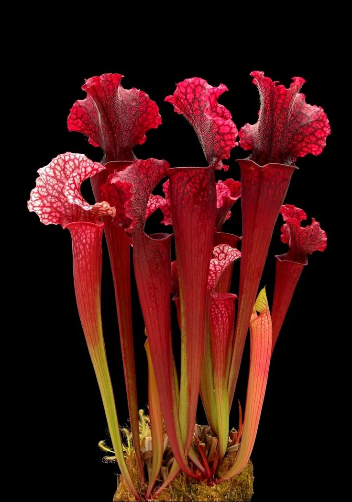
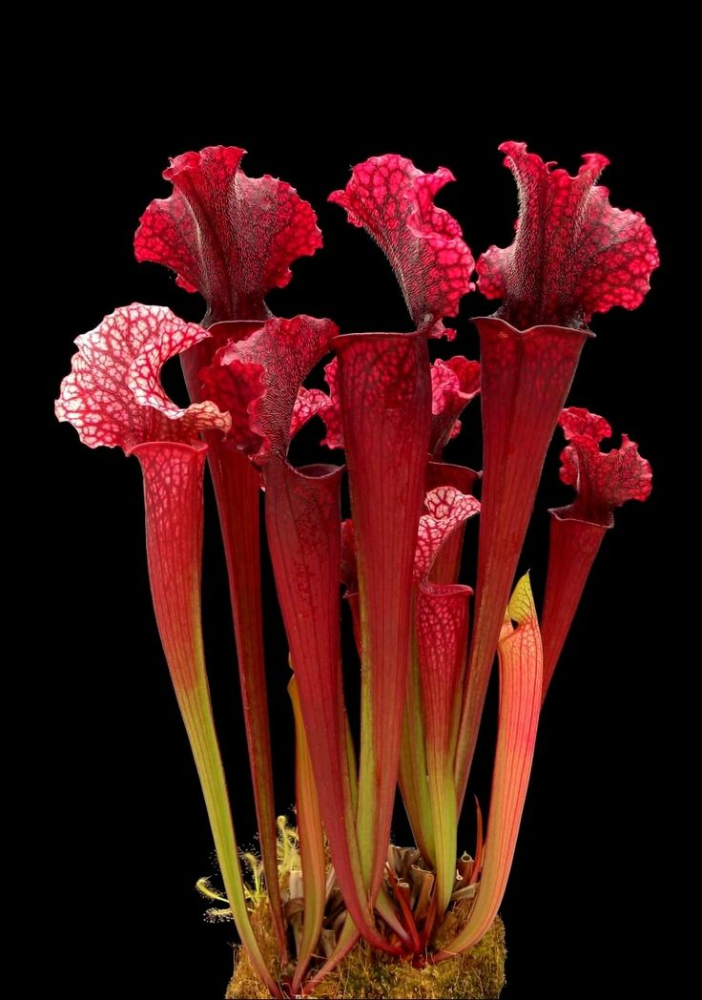

Requieren cuidados específicos, como luz brillante y directa, idealmente cerca de una ventana o bajo luces de cultivo. Deben regarse con agua destilada, de lluvia o filtrada, ya que son sensibles a los químicos.
Se nutren de insectos como moscas y hormigas, que deben ser del tamaño adecuado. Durante la temporada de crecimiento (primavera y verano), es recomendable alimentarlas cada dos semanas, evitando la sobrealimentación.
Nosotros somos un equipo apasionado por las plantas carnívoras. Nuestro objetivo es brindarte toda la información y los cuidados necesarios para que puedas disfrutar de estas fascinantes plantas en tu hogar. Desde consejos de cultivo hasta curiosidades, aquí encontrarás todo lo que necesitas saber.
Suscríbete a nuestro boletín para recibir noticias sobre nuevos productos, tutoriales sobre el cuidado de plantas carnívoras y mucho más.
 



Contiene alcaloides tóxicos que pueden causar síntomas graves, incluyendo parálisis y arritmias cardíacas.
La ingestión de solo unas pocas semillas puede ser fatal, causando síntomas como náuseas, diarrea y daño a los órganos.

Contiene compuestos cardíacos que pueden afectar el corazón y causar síntomas como vómitos, diarrea y, en casos graves, la muerte.
Esta planta es famosa por sus bayas oscuras y brillantes que son extremadamente tóxicas.